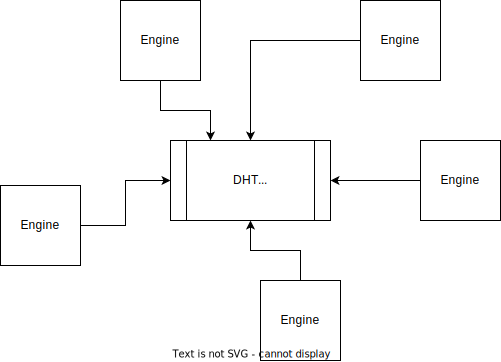

Introducing Collaborative Link Traversal Query Processing in the Context of Structured Decentralized
Environments
Bryan-Elliott Tam
Introducing Collaborative Link Traversal Query Processing (CLTQP) in the Context
of Structured Decentralized
Environments
Bryan-Elliott Tam (Early stage PhD student)
Universiteit Gent
Motivation
- Many decentralized web initiatives
- Give (or re-give depending on perspective) control/sovereignty over data [1]
- Where they store data [1]
- Who has access to it [1]
[1] Solid : enabler of decentralized, digital platforms ecosystems (Verstraete)
Is it enough?
- Divergence of interest or representation (Centralization of news even with social media, addictive
design, sur-representation of certain languages) [1]
- Utilization of users as unpaid sources of revue [2] even when data is anonymized [2] [1]
- Contribution to centralization of wealth [3] [1] [2]
[1] The commodification of privacy on the Internet (Sevignani)
[2] Saving the web by decentralizing data networks? A socio-technical reflection on the promise of
decentralization and personal data stores (Mechant)
[3] Misunderstanding the Internet (Curran)
A more user-controlled way to power applications?
- A structural approach
- Users provide themselves with the computational power
- The more user the lower the cost
- More control over the design choices
- Interoperability between applications
Agenda
- Structured decentralized linked data environment and social applications
- Link Traversal Query Processing (LTQP)
- Problem of completeness of LTQP in structured decentralized linked data environment
- Problem of slow execution time of LTQP in structured decentralized linked data environment
- Research questions and hypotheses
- Related work
- Planned Solution for Search for domain division and collaborative caching
- Limitation and what else can be done
- Conclusion
Structured decentralized linked data environment

Examples of specification providing structure
[1]
[1] Evaluation of Link Traversal Query Execution over Decentralized Environments
with Structural Assumptions (Taelman)
social applications

- Application driven by the interaction between users
- Core functionalities
- Requesting information (We don't focus on access control)
- Discovering information (What we are doing)
- (Writing information, but we don't focus on that here)
Agenda
- Structured decentralized linked data environment and social applications
- Link Traversal Query Processing (LTQP)
- Problem of completeness of LTQP in structured decentralized linked data environment
- Problem of slow execution time of LTQP in structured decentralized linked data environment
- Research questions and hypotheses
- Related work
- Planned Solution for Search for domain division and collaborative caching
- Limitation and what else can be done
- Conclusion
Link Traversal Query Processing (LTQP)

- Recursively looking up URIs to explore surrounding information, starting from a set of URIs called
seed
URIs [1]
- Predefined lookup policies with no input from the client [1] [2]
- Difficulties; open-endedness of the web and query planning [3]
[1] Walking Without a Map: Ranking-Based Traversal for Querying Linked Data (Hartig)
[2] Foundations of traversal based query execution over linked data (Hartig)
[3] Linked Data Query Processing Based on Link Traversal (Hartig)
Agenda
- Structured decentralized linked data environment and social applications
- Link Traversal Query Processing (LTQP)
- Problem of completeness of LTQP in structured decentralized linked data environment
- Problem of slow execution time of LTQP in structured decentralized linked data environment
- Research questions and hypotheses
- Related work
- Planned Solution for Search for domain division and collaborative caching
- Limitation and what else can be done
- Conclusion
Problem of completeness of LTQP in structured decentralized linked data
environment

- With more engines, more exploration of the domain
- Search of non-overlapping section
- Sharing of results
- Structural biase of results
- Sensibility of initial condition
- Popularity biase
Agenda
- Structured decentralized linked data environment and social applications
- Link Traversal Query Processing (LTQP)
- Problem of completeness of LTQP in structured decentralized linked data environment
- Problem of slow execution time of LTQP in structured decentralized linked data environment
- Research questions and hypotheses
- Related work
- Planned Solution for Search for domain division and collaborative caching
- Limitation and what else can be done
- Conclusion
Problem of slow execution time of LTQP in structured decentralized linked data
environment
We propose to use caching
- Multiple similar, complementary, or identical queries
- In LTQP caching: improves query completeness, can increase query execution time [1]
- Has not been evaluated in structured environments
- In the literature does not consider LTQP particularities: long execution time, multiple sources,
difficulties in attaining completeness
[1] How Caching Improves Efficiency and Result Completeness for Querying Linked Data (Hartig)
Agenda
- Structured decentralized linked data environment and social applications
- Link Traversal Query Processing (LTQP)
- Problem of completeness of LTQP in structured decentralized linked data environment
- Problem of slow execution time of LTQP in structured decentralized linked data environment
- Research questions and hypotheses
- Related work
- Planned Solution for Search for domain division and collaborative caching
- Limitation and what else can be done
- Conclusion
Research questions
- Can we achieve better query result completeness and lower global query execution time?
- Does the CPU usage and the number of HTTP requests for each engine diminish?
- How can we prevent subdomain overlapping?
- How can we reduce query execution time using P2P caching?
Hypotheses
- Increasing the number of engine diminishes query execution time and increase the number of data sources
explored.
- It is possible to create minimally overlapping subdomains without increasing query execution time.
- It is possible to create a P2P cache that decreases query execution time.
Agenda
- Structured decentralized linked data environment and social applications
- Link Traversal Query Processing (LTQP)
- Problem of completeness of LTQP in structured decentralized linked data environment
- Problem of slow execution time of LTQP in structured decentralized linked data environment
- Research questions and hypotheses
- Related work
- Planned Solution for Search for domain division and collaborative caching
- Limitation and what else can be done
- Conclusion
Collaborative SPARQL Querying
Using multiple agents to facilitate querying by diminishing the computation load of the
execution or the discovery of data sources. [1]
- Rotating data sources in a P2P network; Snob [2]
- Partial view of the network; random and profile-based
- Results shared after the rotation
- Possible to enhance completeness without visiting each data source
[1] Collaborative SPARQL Query Processing for Decentralized Semantic Data (Grall)
[2] SPARQL Query Execution in Networks of Web Browsers (Grall)
Collaborative SPARQL Querying
- Division of the search space in communities: ColChain [1]
- Creation of deliberate communities
- Querying own data source than the ones from known communities.
- Collaboration in the division of the search space based on socially close information
- Leveraging the social links between data sources [2] [3]
[1] ColChain: Collaborative Linked Data Networks (Aebeloe)
[2] An Interest-Based Per-Community P2P Hierarchical Structure for Short Video Sharing in the YouTube Social Network (Shen)
[3] SemreX: A Semantic Peer-to-Peer System for Literature Documents Retrieval (Jin)
P2P caching in the context of the web
- Mapping URLs in a distributed hash table (DHT): Squirrel [1]
- Flower-CDN adds a mechanism to consider the localicality of the node [2]
- Using an unstructured network with partial views; random and profiles based (
behavioral
locality
):
Behave [3]
- CyCLaDEs adapt the concept of Behave to SPARQL queries of RDF documents [4]
[1] Squirrel: a decentralized peer-to-peer web cache (Iyer)
[2] Flower-CDN: a hybrid P2P overlay for efficient query processing in CDN (El Dick)
[3] Behave: Behavioral Cache for Web Content (Frey)
[4] CyCLaDEs: A Decentralized Cache for Triple Pattern Fragments (Folz)
Agenda
- Structured decentralized linked data environment and social applications
- Link Traversal Query Processing (LTQP)
- Problem of completeness of LTQP in structured decentralized linked data environment
- Problem of slow execution time of LTQP in structured decentralized linked data environment
- Research questions and hypotheses
- Related work
- Planned Solution for Search for domain division and collaborative caching
- Limitation and what else can be done
- Conclusion
Search domain division
- Divide seed URLs between query engines
- Adapt reachability criteria for each engine to the domain and query
- Use a global link queue and solution map
Divide seed URLs between query engines

Advantage
- Minimal comunication between the engines
disadvantage
- Do not consider the overlaps
- Potential loss of accuracy if the solutions are divided between multiple engines
Adapt reachability criteria for each engine to the domain and query

Advantage
- Minimal comunication between the engines
disadvantage
- The criteria has to be changed depending on the type of query
- Might not be suited to every query and dataset; data source not reachable, query not dividable
by criteria, ...
Use a global link queue and solution map

Advantage
- More reliable with no special consideration or manipulation to get all the results
disadvantage
- Necessitate more communication between the engines
Metric evaluated
- Result accuracy
- Query execution time
- The ratio of the execution time and the communication time between the engines
- Ability to access documents with a low number of edge
- Overlapping of the search space
- Query result arrival times
collaborative caching
- Caching of URLs contributing to the query
- intermediary joint results
- Three interpretations
- Directory of (partial) results
- Checkpoint for longer execution
- Map of data sources to explore
Unstructured network where peers are clustered based on their behavior

disadvantage
- Limited view of the network; depending on the organization of the network
Distributed Hash Table to find the cached element

Advantage
- Ability to access the whole network
[1]Cachet: a decentralized architecture for privacy preserving social networking with caching (Nilizadeh)
disadvantage
- Can be slow (log(n); n is the number of cached elements)
- Not good for privacy, but there exist solutions [1]; or we can share exclusively public data
Metric evaluated
- Cache access time
- Cache miss and cache hit rates
- Execution time reduction
Limitation and what else can be done
- Mechanism for detecting similar queries; eg: Query containment [1]
- Fairness/"social contract" for sharing of computational power and cache
- Measurement to know if it lowers the cost of social applications (it's
hard to compare because it has plus values that is hard to quantify)
[1] Answering Queries Using Views, Second Edition (Afrati)
Conclusion
- Building a Collaborative Link Traversal Query Processing in the Context of Structured Decentralized
Environments
-
More complete queries by making engines collaborate
- Faster queries by sharing cache information
- Aim to make the creation of social applications more user-controlled